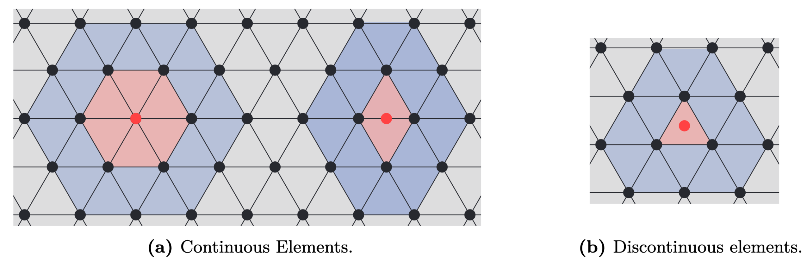

The Fast Multipole Method and BEM
The Fast Multipole Method (FMM) can be used to accelerate the multiplication with the BEM matrices $\mathbf{H}$ and $\mathbf{G}$. Throughout the years many good resources that explain the intricacies of the FMM have been written. As such the details will here be left out. Instead, the focus will be on how to apply a 3rd-party FMM into an existing BEM framework. As an example the focus will be on the Flatiron Institute Fast Multipole Libraries, as this is the library currently interfaced in BoundaryIntegralEquations.jl. This library can be used to accelerate sums of the following form
\[ \begin{aligned} u(\mathbf{z}) % &= \sum_{j=1}^M\left[c_j\frac{\mathrm{e}^{\ii k\|\mathbf{z} - \mathbf{x}_j\|}}{\|\mathbf{z} - \mathbf{x}_j\|} - \mathbf{v}_j\cdot\nabla\left(\frac{\mathrm{e}^{\ii k\|\mathbf{z} - \mathbf{x}_j\|}}{\|\mathbf{z} - \mathbf{x}_j\|}\right)\right] &= \sum_{j=1}^M\left[4\pi c_jG(\mathbf{x}_j,\mathbf{z}) - 4\pi v_j\mathbf{n}(\mathbf{x}_j)\cdot\nabla G(\mathbf{x}_j,\mathbf{z})\right] \end{aligned}\]
where when $\mathbf{z} = \mathbf{x}_j$ the $j$th term is excluded from the sum. Notice that the above does not scale the exponentials with $(4\pi)^{-1}$. As a result this needs to be handled by the user. We now explore how the above can be used to speed up the multiplication of $\mathbf{H}$ and $\mathbf{G}$. First we simplify things by assuming that each element requires the same amount of quadrature points (this will cause numerical issues that are then fixed by a nearfield correction step), $Q$, and that we want to multiply with a known vector $\mathbf{y}$. Then for a row of $\mathbf{G}$ we have that
\[\begin{aligned} \left(\int_\Gamma G(\mathbf{x},\mathbf{z})\mathbf{T}(\mathbf{x})\ \mathrm{d}S_\mathbf{x}\right)\mathbf{y} &\approx \left(\sum_{e=1}^{N}\left(\sum_{i=1}^{Q}G(\mathbf{x}^e(\mathbf{u}_i),\mathbf{z})\text{jacobian}(\mathbf{u}_i)w_i\mathbf{T}^e(\mathbf{u}_i)\right)\mathbf{L}^e\right)\mathbf{y}\\ &= \left(\sum_{j=1}^{NQ}G(\mathbf{x}_j,\mathbf{z})\underbrace{\text{jacobian}(\mathbf{u}_j)w_j\mathbf{T}^{e(j)}(\mathbf{u}_j)\mathbf{L}^{e(j)}}_{j\text{th row of } \mathbf{C}}\right)\mathbf{y}\\ &= \begin{bmatrix} G(\mathbf{x}_1,\mathbf{z}) & G(\mathbf{x}_2,\mathbf{z}) & \dots & G(\mathbf{x}_{NQ},\mathbf{z}) \end{bmatrix} \mathbf{C}\mathbf{y} \end{aligned}\]
where the subscript $j$ refers to an ordering of the collection of Gaussian points from all elements and $e(j)$ is a function that returns the element number that Gaussian point $j$ is located on. Furthermore, the matrix $\mathbf{C}$ can be thought of as a transformation from $\mathbf{y}$ into the coefficients $4\pi c_j$. A similar approach can be applied to $\mathbf{H}$
\[\begin{aligned} \left(\int_\Gamma\frac{\partial G(\mathbf{x}, \mathbf{z})}{\partial\mathbf{n}(\mathbf{x})}\mathbf{T}(\mathbf{x})\ \mathrm{d}S_\mathbf{x}\right)\mathbf{y} &\approx \left(\sum_{e=1}^{N}\left(\sum_{i=1}^{Q}\frac{\partial G(\mathbf{x}^e(\mathbf{u}_i), \mathbf{z})}{\partial\mathbf{n}(\mathbf{x})}\text{jacobian}(\mathbf{u}_i)w_i\mathbf{T}^e(\mathbf{u}_i)\right)\mathbf{L}^e\right)\mathbf{y}\\ &= \left(\sum_{j=1}^{NQ}\nabla G(\mathbf{x}_j, \mathbf{z})\cdot \mathbf{n}(\mathbf{x}_j)\underbrace{\text{jacobian}(\mathbf{u}_j)w_j\mathbf{T}^{e(j)}(\mathbf{u}_j)\mathbf{L}^{e(j)}}_{j\text{th row of }\mathbf{V}}\right)\mathbf{y}\\ &= \begin{bmatrix} \nabla G(\mathbf{x}_1, \mathbf{z})\cdot \mathbf{n}(\mathbf{x}_1) & \dots & \nabla G(\mathbf{x}_{NQ}, \mathbf{z})\cdot \mathbf{n}(\mathbf{x}_{NQ}) \end{bmatrix} \mathbf{V}\mathbf{y}, \end{aligned}\]
where $\mathbf{V}$ is a matrix that transforms $\mathbf{y}$ into the coefficients $4\pi v_j$. The two equations highlights how the FMM can be applied for problems where the number of Gaussian points on each element is equal. However, in practical cases this approach will be victim to numerical instabilities due to numerical errors stemming from the integration of elements close to the collocation point. To resolve this issue the BEM matrices is split into parts
\[ \mathbf{A} = \mathbf{G}\mathbf{F} + \mathbf{S}, \quad \mathbf{G} \in\mathbb{C}^{n\times NQ},\ \mathbf{S}\in\mathbb{C}^{n\times n},\ \mathbf{F}\in\mathbb{R}^{NQ\times n}.\]
Here $\mathbf{G}$ is the part approximated by the FMM (using $Q$ Gaussian points on each element), $\mathbf{F}$ is either $\mathbf{C}$ or $\mathbf{V}$ from the two equations while $\mathbf{S}$ a nearfield correction. In short the nearfield correction subtract the wrong integration done by using only $Q$ Gaussian points and adds on the correct integration instead. It is important to note that $\mathbf{S}$ and $\mathbf{F}$ are both highly sparse matrices, meaning that both assembly and multiplication with these scale $\mathcal{O}(n\tau)$ where $\tau \ll n$. This means that using an approximate scheme for $\mathbf{G}$ with a multiplication that scales linear in time and memory result in a representation of $\mathbf{A}$ that scales similarly.
